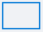
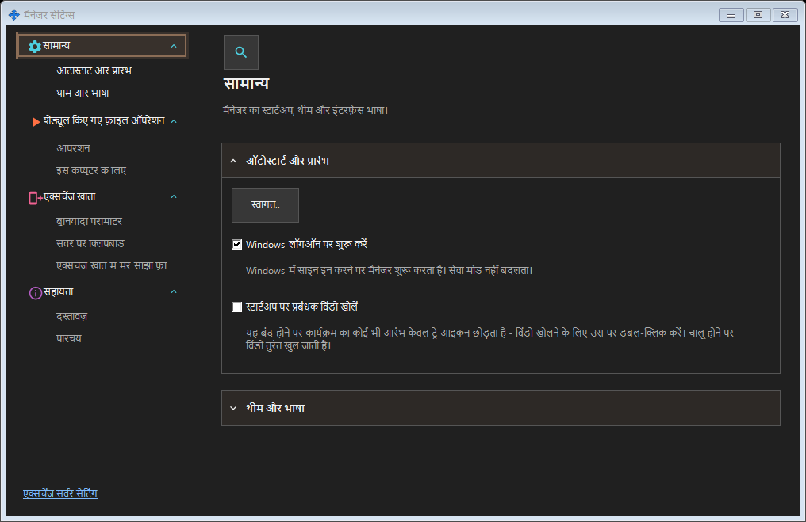
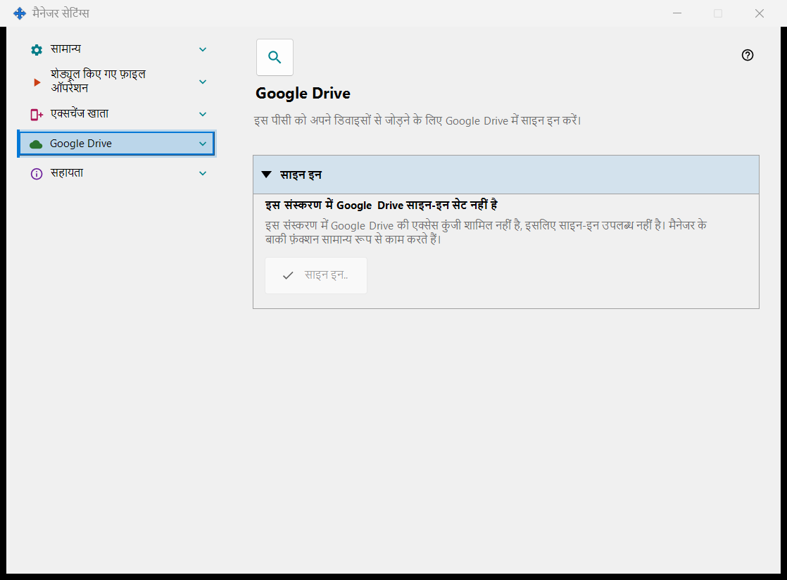
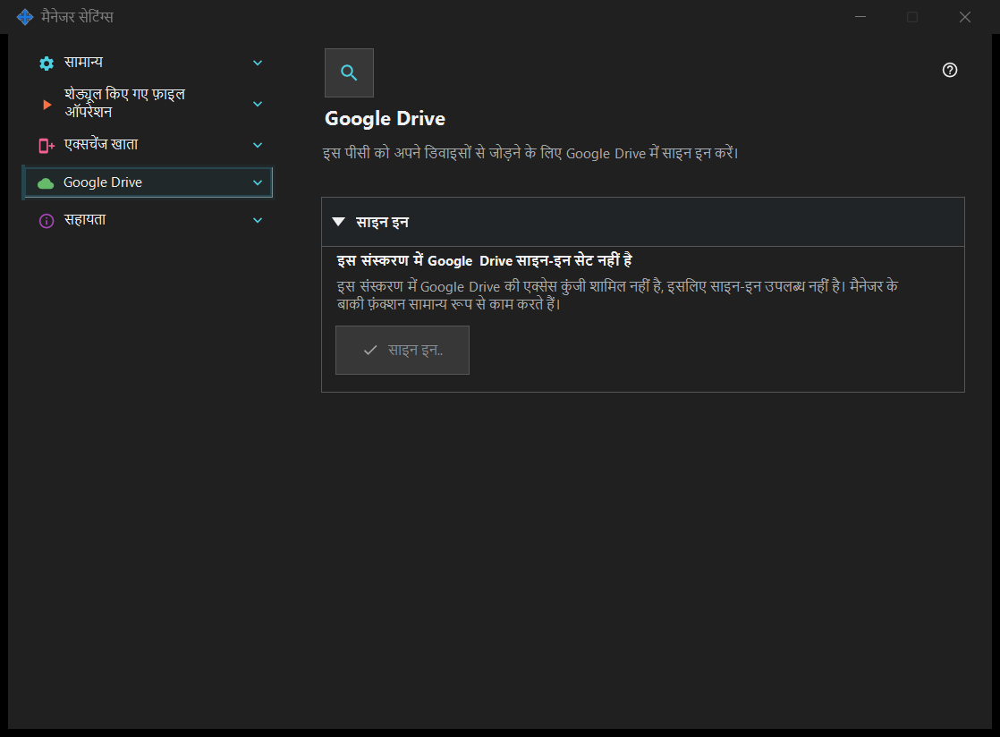

प्रबंधक सेटिंग
प्रबंधक सेटिंग
यह किस लिए है
स्टार्टअप, थीम, भाषा, दूरस्थ खाता, प्रकाशन, क्लिपबोर्ड और निर्धारित फ़ाइल कार्य प्रबंधक में हैं। स्थानीय सर्वर आवश्यक नहीं है। यदि SFTP साझाकरण घटक स्थापित है तो उसके पृष्ठ इस विंडो में एक समूह बनाते हैं।


इस क्रम में
ट्रे या घटक लिंक से खोलें। विंडो खोलने और बंद करने से सर्वर शुरू या बंद नहीं होता। दूरस्थ लॉगिन के लिए स्थानीय सर्वर आवश्यक नहीं है।
तत्व
प्रबंधक सेटिंग
स्टार्टअप, थीम, भाषा, दूरस्थ खाता, प्रकाशन, क्लिपबोर्ड और निर्धारित फ़ाइल कार्य प्रबंधक में हैं। स्थानीय सर्वर आवश्यक नहीं है। यदि SFTP साझाकरण घटक स्थापित है तो उसके पृष्ठ इस विंडो में एक समूह बनाते हैं। ट्रे या घटक लिंक से खोलें। विंडो खोलने और बंद करने से सर्वर शुरू या बंद नहीं होता। दूरस्थ लॉगिन के लिए स्थानीय सर्वर आवश्यक नहीं है।
प्रबंधक सेटिंग
स्टार्टअप, थीम, भाषा, दूरस्थ खाता, प्रकाशन, क्लिपबोर्ड और निर्धारित फ़ाइल कार्य प्रबंधक में हैं। स्थानीय सर्वर आवश्यक नहीं है। यदि SFTP साझाकरण घटक स्थापित है तो उसके पृष्ठ इस विंडो में एक समूह बनाते हैं। ट्रे या घटक लिंक से खोलें। विंडो खोलने और बंद करने से सर्वर शुरू या बंद नहीं होता। दूरस्थ लॉगिन के लिए स्थानीय सर्वर आवश्यक नहीं है।
Google Drive
- Share Manager खोलें, «मैनेजर सेटिंग्स» खोलें और «Google Drive» पेज चुनें। आपको एक Google खाता और इंटरनेट कनेक्शन चाहिए। Windows के लिए Google Drive ऐप की ज़रूरत नहीं है, और आपको Google का कोई प्रोजेक्ट, कुंजी या सेटिंग खुद नहीं बनानी पड़ती।
- «साइन इन..» दबाएँ। डिफ़ॉल्ट ब्राउज़र Google का पेज खोलता है: खाता चुनें, वहीं साइन इन करें और दिखाए गए एक्सेस की अनुमति दें। पासवर्ड केवल Google के पेज पर टाइप किया जाता है, इस ऐप में कभी नहीं। वहाँ आप साइन-इन रद्द भी कर सकते हैं या एक्सेस देने से मना कर सकते हैं; तब कुछ भी सहेजा नहीं जाता।
- Share Manager पर लौटें: गहरे अक्षरों वाली पंक्ति «Google Drive में साइन इन हो गया है» दिखाती है, और आप ब्राउज़र टैब बंद कर सकते हैं। यदि ब्राउज़र नहीं खुला, तो अपना डिफ़ॉल्ट ब्राउज़र जाँचें और «साइन इन..» फिर से दबाएँ। यदि ब्राउज़र में त्रुटि दिखे, या पेज लगातार «ब्राउज़र में साइन-इन की प्रतीक्षा है..» दिखाता रहे, तो «रद्द करें» दबाएँ और फिर से साइन इन करें। साइन-इन इसी पीसी पर रहता है: Share Manager बंद करने, Windows से साइन-आउट करने या पीसी रीस्टार्ट करने के बाद वह ब्राउज़र के बिना फिर से इस्तेमाल होता है, जब तक Google एक्सेस को मान्य रखता है।
- दूसरे डिवाइस के साथ आदान-प्रदान करने के लिए वहाँ भी उसी Google खाते से साइन इन करें, उस डिवाइस के अपने Google Drive पेज पर: दूसरे पीसी पर उसके Share Manager में, फ़ोन पर Android ऐप में। अलग-अलग Google खातों में साइन इन डिवाइस एक-दूसरे को नहीं देखते, और दोनों डिवाइस पर ऐप का ऐसा संस्करण चाहिए जिसमें Google Drive पेज हो। साइन इन होने से अपने आप कुछ नहीं भेजा जाता: Google Drive के माध्यम से क्या जाता है, यह क्लिपबोर्ड, शेड्यूल किए गए ऑपरेशनों और «Google Drive पर कतार» समूह की सहायता में बताया गया है।
- ऐप केवल आपके Google Drive पर अपने छिपे हुए फ़ोल्डर तक एक्सेस माँगता है (स्कोप drive.appdata)। आपके Google Drive की अन्य फ़ाइलें वह न देखता है, न ब्राउज़ करता है, न सिंक करता है, और उसे ईमेल पता या प्रोफ़ाइल का डेटा नहीं मिलता। आपके डिवाइस एक-दूसरे को जो भेजते हैं, वह आपके Google Drive में जगह लेता है; «Google Drive पर कतार» समूह उसे दिखाता है और पैकेट हटाने देता है। «इस डिवाइस पर साइन-आउट करें» छिपे हुए फ़ोल्डर से इस पीसी की प्रविष्टियाँ हटाता है, Google पर एक्सेस रद्द करता है और इस पीसी पर सहेजा गया साइन-इन हटा देता है। इसके बाद Google उसी खाते से साइन इन आपके अन्य डिवाइस पर भी एक्सेस समाप्त कर सकता है; यदि उनमें से कोई बताए कि उसका साइन-इन अब काम नहीं करता, तो वहाँ फिर से साइन इन करें। इस पीसी को फिर से जोड़ने के लिए «साइन इन..» दबाएँ।
- यदि कुछ गलत हो जाए, तो स्थिति के नीचे की पंक्ति बताती है कि क्या हुआ। कनेक्शन नहीं है, या Google से त्रुटि: ऐप अपने आप दोबारा प्रयास करता है, आपको कुछ करने की ज़रूरत नहीं। साइन-इन रद्द हुआ या एक्सेस अस्वीकार हुआ: जब चाहें «साइन इन..» फिर से दबाएँ। ऐसा खाता जिसे कोई संगठन प्रबंधित करता है और जिसका व्यवस्थापक ऐप को रोकता है: किसी दूसरे Google खाते से साइन इन करें या व्यवस्थापक से पूछें। संदेश कि साइन-इन अब काम नहीं करता: एक्सेस रद्द हो गया या समाप्त हो गया है, «साइन इन..» फिर से दबाएँ। आपके Google Drive में खाली जगह नहीं है: जगह खाली करें या कतार से पैकेट हटाएँ। दैनिक अपलोड सीमा: अगले दिन तक प्रतीक्षा करें। «इस संस्करण में Google Drive साइन-इन सेट नहीं है», या संदेश कि इस इंस्टॉलेशन की साइन-इन कुंजी अब स्वीकार नहीं की जाती: ऐप का वर्तमान संस्करण उसकी आधिकारिक साइट से इंस्टॉल करें; तब तक Share Manager के बाकी फ़ंक्शन काम करते हैं।
यह पेज इस पीसी को आपके अपने Google खाते में साइन इन करता है, ताकि ऐप आपके Google Drive पर अपने निजी छिपे हुए फ़ोल्डर का उपयोग कर सके। «साइन इन..» दबाएँ: डिफ़ॉल्ट ब्राउज़र खुलता है, आप Google पर एक्सेस की अनुमति देते हैं, और Google उत्तर को स्थानीय पते के ज़रिए इस पीसी पर लौटा देता है; इसके बाद ब्राउज़र टैब बंद किया जा सकता है। माँगी जाने वाली एकमात्र अनुमति आपके Google Drive पर ऐप के अपने छिपे हुए फ़ोल्डर तक पहुँच है (स्कोप drive.appdata): ऐप आपके Google Drive की कोई अन्य फ़ाइल नहीं देख सकता और उसे न ईमेल पता मिलता है, न प्रोफ़ाइल का डेटा। यदि Google माँगे गए एक्सेस से अलग एक्सेस देता है, तो साइन-इन अस्वीकार कर दिया जाता है। गहरे अक्षरों वाली पंक्ति स्थिति दिखाती है। «Google Drive में साइन इन नहीं है»: «साइन इन..» उपलब्ध है; यदि एक्सेस रद्द हो गया या समाप्त हो गया है, तो नीचे की पंक्ति यह बताती है और फिर से साइन इन करने को कहती है। «ब्राउज़र में साइन-इन की प्रतीक्षा है..»: ब्राउज़र में साइन-इन पूरा करें या «रद्द करें» दबाएँ। «Google Drive में साइन इन हो गया है»: यह पीसी आपके Google Drive से जुड़ा है, और इसका नाम तथा संक्षिप्त पहचानकर्ता दिखाया जाता है। «Google Drive अभी उपलब्ध नहीं है»: नीचे की पंक्ति कारण बताती है - कनेक्शन नहीं है, दैनिक अपलोड सीमा पूरी हो गई है, आपके Google Drive में खाली जगह नहीं है, या Google से त्रुटि मिली है; कनेक्शन न होने पर और त्रुटि होने पर ऐप अपने आप दोबारा प्रयास करता है। साइन-आउट चलते समय «Google Drive से साइन-आउट हो रहा है..» दिखता है। «इस डिवाइस पर साइन-आउट करें» एक ही प्रश्न पूछता है, और डिफ़ॉल्ट उत्तर «नहीं» है। «हाँ» के बाद वह Google पर एक्सेस रद्द करता है, आपके Google Drive के छिपे हुए फ़ोल्डर से इस पीसी की प्रविष्टियाँ हटाता है और इस पीसी पर सहेजा गया साइन-इन टोकन हटा देता है; बटनों के नीचे की पंक्ति बताती है कि कितनी प्रविष्टियाँ हटाई गईं, या यह कि Google ने एक्सेस रद्द होने की पुष्टि नहीं की - तब आप उसे अपने Google खाते की सेटिंग में रद्द कर सकते हैं। Google की एक्सेस कुंजी के बिना बने संस्करण में पेज «इस संस्करण में Google Drive साइन-इन सेट नहीं है» दिखाता है, «साइन इन..» निष्क्रिय रहता है और मैनेजर के बाकी फ़ंक्शन सामान्य रूप से काम करते हैं। जब तक यह पीसी साइन इन है, Share Manager के क्लिपबोर्ड आदेश Google Drive के माध्यम से भी काम करते हैं, शेड्यूल किया गया ऑपरेशन «Google Drive के माध्यम से» को स्रोत या गंतव्य के रूप में ले सकता है, और व्यूअर की संसाधन सूची वे फ़ोल्डर दिखाती है जिन्हें आपके अन्य डिवाइस वहाँ प्रकाशित करते हैं। «Google Drive पर कतार» समूह दिखाता है कि आपके डिवाइस एक-दूसरे को क्या भेजते हैं और उसमें कितनी जगह लगती है; कोई पैकेट चुनें और उसे अपने Google Drive से हटाने के लिए «पैकेट हटाएँ» दबाएँ। Google Drive के माध्यम से फ़ाइलें और क्लिपबोर्ड आपके अपने Google खाते में रखे जाते हैं, जैसे Google Drive पर आपकी अन्य फ़ाइलें; कोई एक्सचेंज सर्वर इसमें भाग नहीं लेता।


प्रबंधक सेटिंग
स्टार्टअप, थीम, भाषा, दूरस्थ खाता, प्रकाशन, क्लिपबोर्ड और निर्धारित फ़ाइल कार्य प्रबंधक में हैं। स्थानीय सर्वर आवश्यक नहीं है। यदि SFTP साझाकरण घटक स्थापित है तो उसके पृष्ठ इस विंडो में एक समूह बनाते हैं। ट्रे या घटक लिंक से खोलें। विंडो खोलने और बंद करने से सर्वर शुरू या बंद नहीं होता। दूरस्थ लॉगिन के लिए स्थानीय सर्वर आवश्यक नहीं है।
प्रबंधक सेटिंग
सहायता / परिचय में विश्लेषण के लिए लॉग निर्यात करें चुनें। स्थानीय Media Exchange Server, SFTP, स्थापना और सहायक उपकरणों, मैनेजर और व्यूअर के सभी रखे गए लॉग एकत्र होते हैं, सर्वर बंद होने पर भी। दूरस्थ लॉग डाउनलोड नहीं होते। गोपनीय जानकारी हटती है; छोटे किए गए, छोड़े गए या अपठनीय स्रोत समीक्षा में दिखते हैं और संग्रह अपूर्ण होता है। लेखक को भेजें समीक्षा किए ZIP के साथ मेल का मसौदा खोलता है; भेजना आपका निर्णय है। संलग्नक विफल हो तो ZIP स्वयं जोड़ें। फ़ाइल एक्सप्लोरर में दिखाएँ ZIP चुनता है: उसे कॉपी करके दूसरी फ़ोल्डर में पेस्ट करें। विफलता पर समीक्षा में पथ चुनकर कॉपी करें। दिखाने या मेल माँगने के बाद संग्रह रहता है, मेल रद्द करने पर भी। उससे पहले रद्द करना संग्रह हटाता है। अगला निर्यात सात दिन से पुराने निष्क्रिय संग्रह हटाता है; अधिक समय के लिए ZIP कहीं और कॉपी करें। 20 MiB से बड़े संग्रह एक्सप्लोरर में मिलते हैं, मेल को सौंपना बंद रहता है।
प्रबंधक सेटिंग · SFTP साझाकरण सेटिंग · एक्सचेंज सर्वर सेटिंग